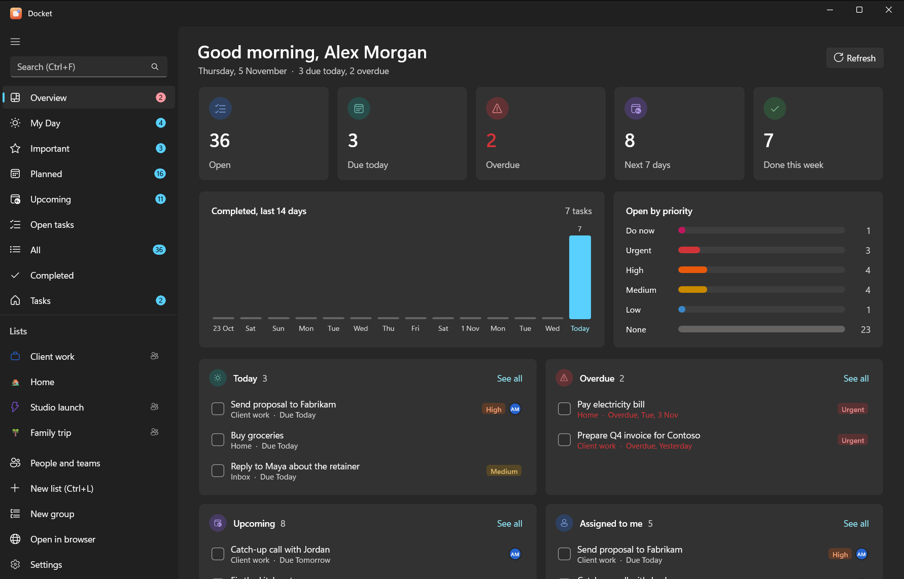

Start here
Getting started
Docket is a free, open-source to-do app in the style of Microsoft To Do. Your tasks live on your own server, on your PC or on a machine you control, and you reach them from Windows, Android, a browser, the command line and AI assistants such as Claude and ChatGPT.


#What Docket is
Docket is a set of apps on top of Vikunja, an open-source task server. Vikunja stores your tasks; Docket gives you the familiar Microsoft To Do way of working with them: My Day, Important, Planned, lists and groups, subtasks, reminders, repeats and boards.
Nobody else holds your data. Docket talks only to the server you sign in to and sends nothing to its developers.
#The pieces
| Piece | What it is | Runs on |
|---|---|---|
| Docket for Windows | The main app (WinUI 3, Fluent design) | Windows 10 and 11 |
| Docket for Android | The same features on your phone (.NET MAUI) | Android |
| Docket web | Vikunja's own web app, reskinned to look like Docket | Any browser, at http://localhost:3457 on Windows |
docket CLI | Your tasks from a terminal, with JSON output for scripts | Windows |
docket-mcp connector | Lets AI assistants read and change your tasks (it can't delete) | Windows, macOS, Linux, Docker |
| Vikunja | The task server that stores everything | Your PC, a home server or a VPS |
Every Docket app shares one core library, so My Day, repeats, quick-add words and subtasks behave the same everywhere.
#Pick your path
- Just me, on my Windows PC One installer sets up the server, the app, the CLI and the AI connector. No admin rights needed. Add your phone later with Tailscale.
- An always-on server One script on any Linux machine with Docker. You get HTTPS, the web app, and a connector that claude.ai and ChatGPT can reach.
- I already run Vikunja Point the Docket apps and connector at your server.
Not sure? Start with the Windows PC. You can move to a server later by backing up and restoring. The setup overview compares the options in more detail.
#Five-minute quick start (Windows)
- Download
docket-<version>-windows-x64.zipfrom the latest release and unzip it anywhere. - Right-click
install.ps1and choose Run with PowerShell. - Type your time zone when asked (for example
Europe/LondonorAsia/Kolkata). - Your browser opens. Create your account there, go back to the PowerShell window and press Enter.
- Sign in once more in the window with the same username and password. Docket makes its own keys (tokens) from that sign-in; your password isn't stored.
- Answer Y to close sign-ups, so nobody else can make an account.
- Open Docket from the Start menu and add your first task, for example
Send invoice friday !3.
That's it. The Windows guide explains every step and prompt, and what was installed where.
Tip
Type / in the add bar at the bottom of a list to see the commands: /s search, /x mark done, /m add to
My Day, /i star, /ai plan with AI. See quick add and commands.
#Next steps
- Learn the Windows app, the Android app or the CLI.
- Connect an AI: Claude, ChatGPT or a local model. Then add the Docket skill for Claude so Claude knows how to work with your tasks.
- Share lists and assign tasks: people, teams and sharing.
- Something not working? See troubleshooting and the FAQ.